Proofs · Korrekturfahnen & Vorabdrucke · nach dem Revelations-Archiv
Die Proofs
Die unscheinbarsten Bücher des Archivs sind die begehrtesten: Korrekturfahnen, Vorabexemplare und spiralgebundene Typoskripte, gedruckt in Kleinstauflagen für Lektoren und Rezensenten — manche existieren nur ein einziges Mal.
Die Romane
Worum es geht
Bevor ein Roman in den Handel kommt, geht er als Proof durch die Welt: unkorrigierte Fahnen für Lektorat und Presse, meist broschiert, oft mit Behelfsumschlag. Das Revelations-Archiv verzeichnet sie von The Damnation Game (1985) bis The Scarlet Gospels (2015) — samt Preisführer für Sammler.
Aus dem Archiv
-
The Great and Secret Show zirkulierte 1988 zuerst als spiralgebundenes, unkorrigiertes Typoskript — noch unter dem Arbeitstitel The Art.
Revelations-Archiv · Proofs
-
Vom Weaveworld-Vorabdruck bei Collins existieren zwei Varianten mit identischem Umschlag: Beide nennen sich „Special advance reader’s sample: Parts 1–4“ — die eine enthält nur das erste Buch, die andere den kompletten Text.
Collins, UK · 1987
-
Für Abarat ließ HarperCollins die losen Seitenfahnen auch gelocht, gebunden und einzeln nummeriert kursieren — Vorboten des vierfarbigen Bilderromans.
HarperCollins, USA · 2001
-
Das teuerste Stück der Rubrik ist das älteste: Die Korrekturfahne der UK-Erstausgabe von The Damnation Game führt der Archiv-Preisführer mit 300 bis 350 Dollar.
Weidenfeld & Nicolson, UK · 1985
Ausgewählte Proofs
Klick vergrößert das Cover
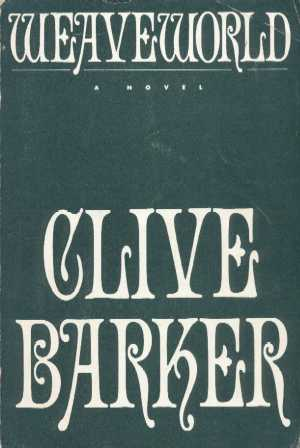
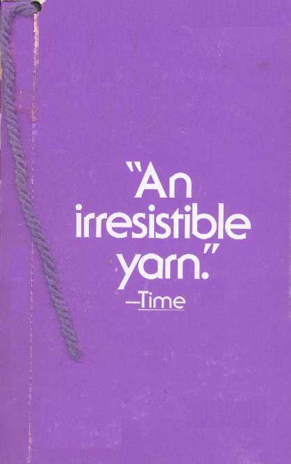
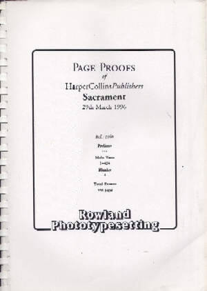
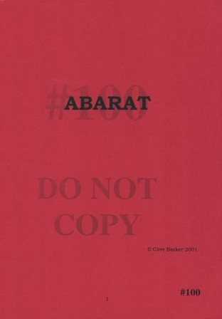
Books of Blood
Worum es geht
Auch die Erzählungssammlungen, die Barker berühmt machten, liefen vorab durch die Redaktionen: Berkley und Poseidon druckten Mitte der Achtziger broschierte Proofs der sechs Bände, dazu kamen Sammel- und Auslandsausgaben — bis hin zur deutschen Fahne von Droemer Knaur.
Aus dem Archiv
-
Das kurioseste Stück: Poseidon druckte 1986 einen Vorab-Proof, der aus The Inhuman Condition allein die Erzählung Revelations enthält — plus eine zweiseitige Würdigung von Stephen King.
Poseidon Press, USA · 1986
-
Auch der deutsche Markt bekam seine Fahne: Droemer Knaur zog 1986 in München einen broschierten Proof des ersten Blutbuchs ab.
Droemer Knaur, München · 1986
-
Der Ace/Putnam-Proof des Sammelbands von 1988 enthält bereits das Postscript On Jerusalem Street — den Epilog, mit dem sich der Kreis der Blutbücher schließt.
Ace/Putnam, USA · 1988
Ausgewählte Proofs
Klick vergrößert das Cover
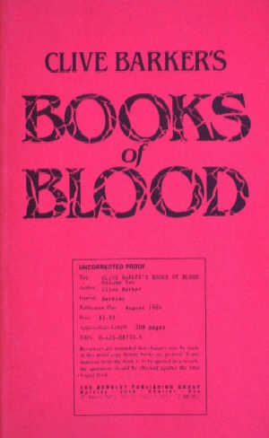
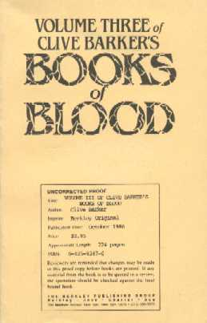
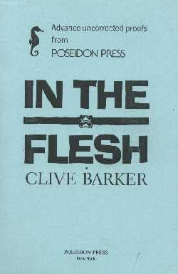
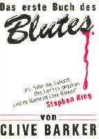
Erzählungen, Poesie, Kunst & Theater
Worum es geht
Die kurze Form streut am weitesten: Novellen wie Cabal und The Hellbound Heart, Beiträge zu Anthologien von Cutting Edge bis Dark Delicacies, dazu die Fahnen der Gedichte, Theaterstücke und Kunstbände — vom Incarnations-Proof bis zu den Druckfahnen von Visions of Heaven and Hell.
Aus dem Archiv
-
Cabal lief wie The Art zuerst als unkorrigiertes, spiralgebundenes Typoskript durch das Haus Poseidon — im Preisführer des Archivs mit rund 300 Dollar notiert.
Poseidon Press, USA · 1988
-
Von den Seitenfahnen der Hellbound-Heart-Ausgabe bei Earthling existiert genau ein Exemplar — das Extremste, was der Begriff Kleinstauflage hergibt.
Earthling Publications, USA · 2007
-
Selbst die Theaterstücke und Kunstbände gingen in Fahnen: Incarnations als HarperPrism-Proof von 1995, Visions of Heaven and Hell als Druckfahnen von Rizzoli/Universe.
HarperPrism 1995 · Rizzoli/Universe 2005
Ausgewählte Proofs
Klick vergrößert das Cover
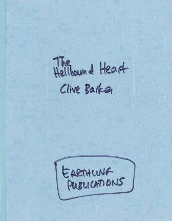
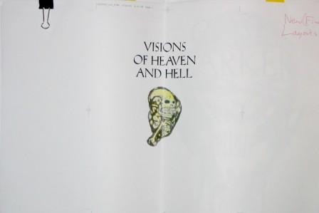
Bücher über Clive
Worum es geht
Auch die Sekundärliteratur läuft in Fahnen: die Biografie The Dark Fantastic, der Werkschau-Band Shadows in Eden, Bücher mit Barkers Einleitungen von Ramsey Campbells Scared Stiff bis Bradburys Dark Carnival — und Interviewbände wie Faces of Fear.
Aus dem Archiv
-
Das seltenste Stück der Rubrik: ein spiralgebundener Proof der Weird Tales No 292 mit eingeklebten Illustrationen und Probeumschlag — es existiert ein einziges Exemplar.
Terminus Publishing, USA · 1988
-
Kleinstauflagen mit Ansage: Vom A4-Proof der King-Rat-Ausgabe entstanden sieben Exemplare, von den digitalen Fahnen des Painter-Taschenbuchs vier, von Bradburys Dark Carnival bei Gauntlet zwölf.
Earthling 2005 · Archive 2018 · Gauntlet 2001
-
Von Shadows in Eden, der ersten großen Werkschau, hat sich sogar der Produktions-Mock-up erhalten: ein Layout-Proof der ersten siebzig Seiten.
Underwood Miller, USA · 1990
Ausgewählte Proofs
Klick vergrößert das Cover
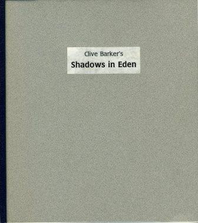
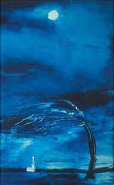
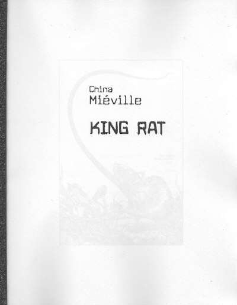
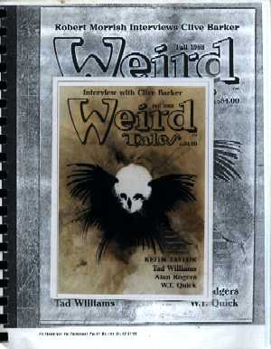
Cover-Abbildungen: Revelations-Archiv (clivebarker.info) · Artwork © Clive Barker bzw. der jeweiligen Verlage